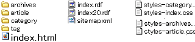

ブログのフォルダ構造と階層
ブログの階層の深さはどのように判断すればいいのかというのは、いまいち疑問があったりしますが、ブログの階層の浅いと深いの違いは人によってまちまちのようです。
フォルダ構造上で階層の深いや浅いのことをいうのか、それとも、ブログトップページからのクリック数で判断するのかは微妙なところですが、一般的には、検索エンジンなどはトップページから何クリックでそのページへたどり着くかで判断しているようです。
ブログのフォルダ構造とurlの関係
シーサーブログの場合のフォルダ構造は一般的にはこんな感じの構造になっているようなんです。

これはちょっと前の記事で、リンク切れの無料チェックツールの Website Explorerというのを使用したのですが、このツールではサイトの構造を詳しくみることができたりもします。
これを見てみると、ルートディレクトリの箇所に、index.html ファイルと CSS 関連のスタイルシートファイル、サイトマップや rdf 関連のファイルが入っているもようです。
index.html のページは url を入力してみると、確かに存在するようなのですが、通常のデフォルド設定では、トップページにアクセスした際に、index.html ページを表示しないような設定となっているようです。
サブフォルダは４種類のシーサーブログ
このなかで、シーサーブログのサブフォルダは tag や article など４種類にわかれているようで、それぞれのサブフォルダのなかに 112251425.html などの html ファイルが入っているようです。
これをＵＲＬで見てみると、//tukuruzo.seesaa.net/article/112251425.html といった感じになっているかと思います。
ホームページを作成する際には、この番号の箇所を任意の文字（たとえば、seesaa.html など。）で指定することができますが、無料ブログの場合はどこでも連番記事制となっているもようです。
このサブフォルダということで見てみると、ルートディレクトリから一つ下のサブフォルダの２階層しかないんで、ブログの階層の深いも浅いもないように思えますが、実際はトップページからのクリック数で深いと浅いが判断されているようです。
ブログの浅い階層には重要なファイルを設置
ブログの浅い階層というのは、トップページからワンクリックで移動できる範囲あたりを浅い階層と呼ぶのだろうと思いますが、過去ログの深いページへは、数クリックしないとたどりつけない深い階層のページもあったりします。
このブログの深い階層のページはアクセスされることもほとんどないでしょうし、検索エンジンにインデックスされることも、それほどないような気もします。
なので、ブログトップページから何クリックしないといけないような深い階層には、重要なファイルは入れない方がいいのではないかなと思うんです。
なるべく、アクセスして欲しいようなメインのページは、トップページからワンクリックでいけるような浅いページに設置しておくのがいいのではないかと思います。
意外に階層の浅い過去ログページ
ブログの過去ログページというと、検索エンジン経由ではあまりアクセスされることもないですし、ほとんどが記事ページやトップページがヒットすることが多いと思います。
そんなわけで、過去ログページは階層が深いような印象もあったりしますが、実際はトップページからワンクリックの位置にあったりもするんで、けっこう浅かったりもするものです。
ページランクもある程度付いている過去ログページもあるかと思いますが、トップページからワンクリックの位置にある過去ログページには、ヒットさせたい個別記事ページを集中させるような過去ログ日付変更をすると若干のアクセスアップにつながるような気もするんです。
- 過去ログを overflow でブログカスタマイズ
以前に過去ログをプルダウン化してブログカスタマイズしてみたんですが、やっぱ css で overflow 指定してスクロール型の擬似フレームっぽい方がいいかなって気もするんです。overflow でブ... - ブログ階層の作り方
ブログ階層にも深さが必要だと思うんですけど、それにはきちんとしたフォルダ分けをする必要があるかと思うんです。でも、無料ブログサービスの場合、カテゴリごとでのフォルダわけができなかったりもしたりです、、...